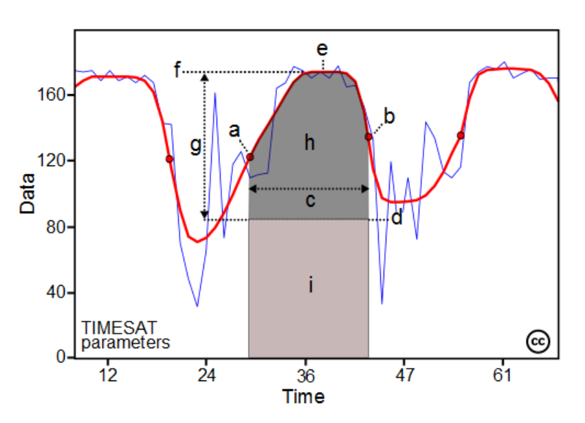
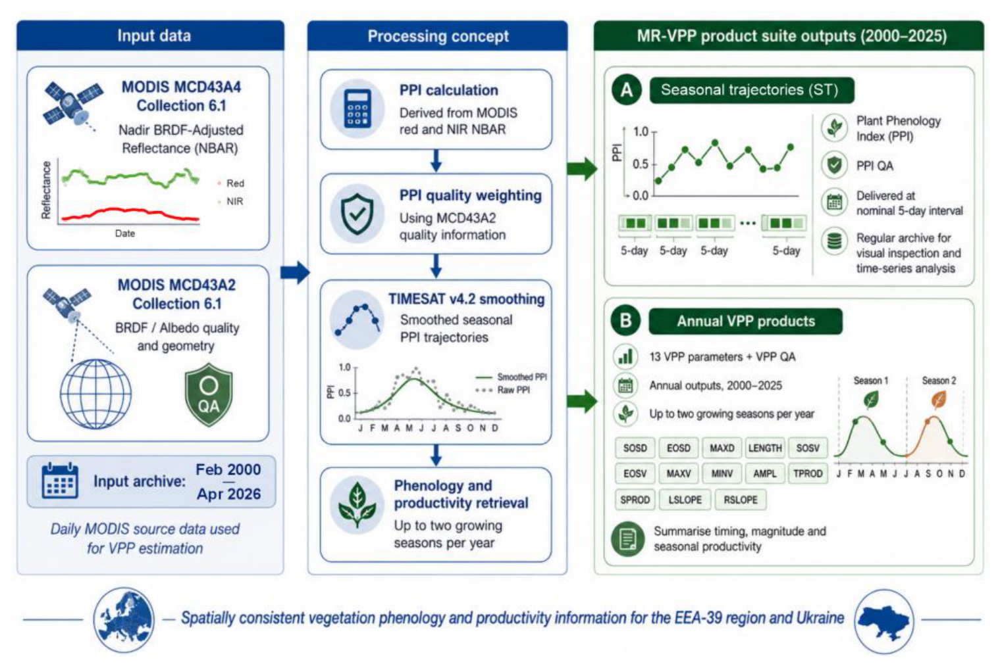
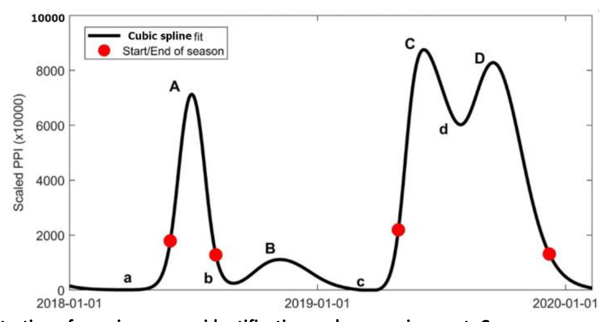
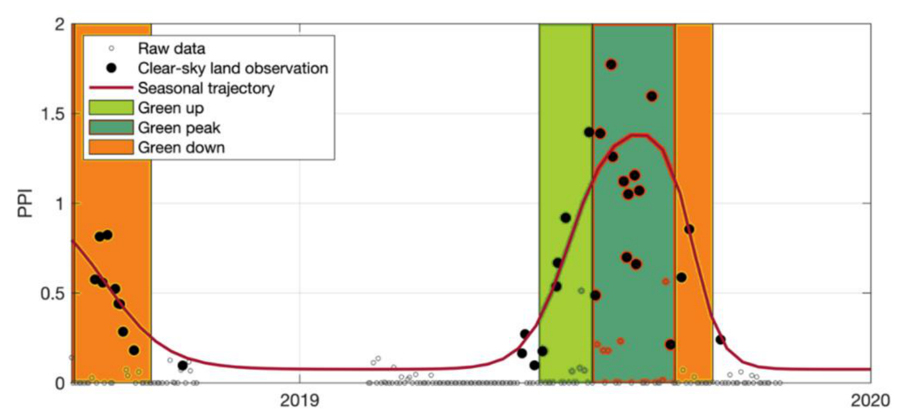
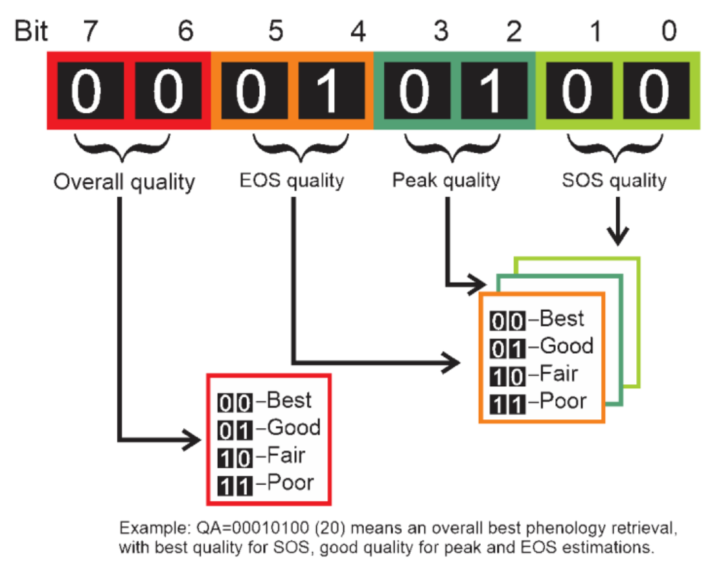
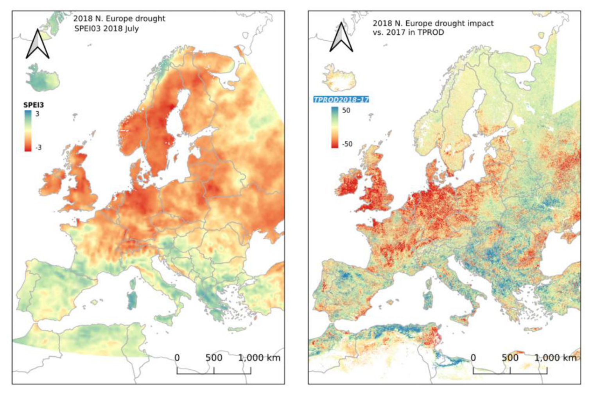
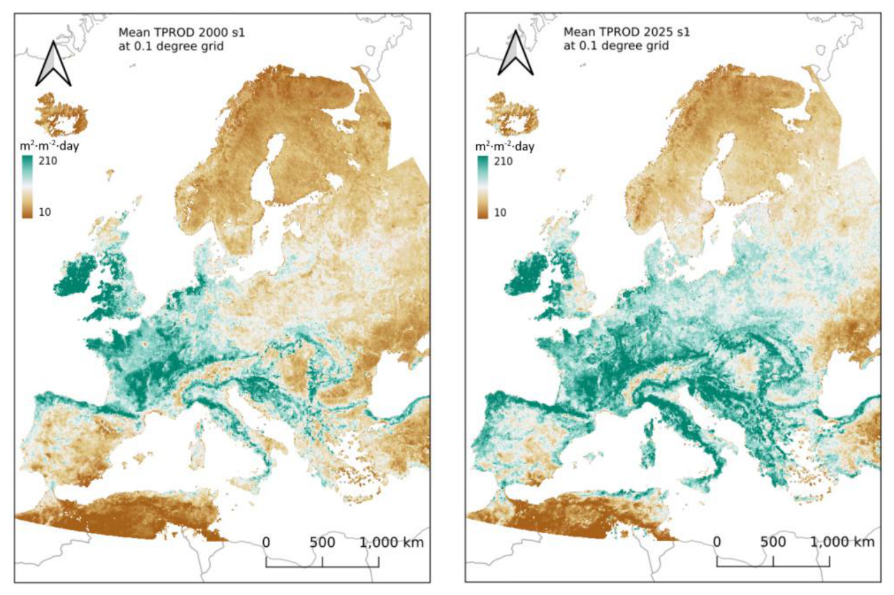

Medium Resolution Vegetation Phenology and Productivity (MR-VPP) – Product User Manual (PUM)
Copernicus Land Monitoring Service
Contact:
European Environment Agency (EEA)
Kongens Nytorv 6
1050 Copenhagen K
Denmark
https://land.copernicus.eu/
Reference Document for Version 5.0 Issue 2.0
Lead service providers for production (SC#5 MR-VPP 2025 Extension): Flemish Institute for Technological Research, Belgium (VITO), Lund University, Sweden.
Produced by: Hongxiao Jin1, Zhanzhang Cai1, Lars Eklundh1, Else Swinnen2, Walter Horsten2, Tim Ng2
1 Lund University, Lund, Sweden
2 VITO
Disclaimer: © European Union, Copernicus Land Monitoring Service 2026, European Environment Agency (EEA) All Rights Reserved. No parts of this document may be photocopied, reproduced, stored in retrieval system, or transmitted, in any form or by any means whether electronic, mechanical, or otherwise without the prior written permission of the European Environment Agency.
Executive summary
Copernicus is the European Union’s Earth Observation Programme. It provides information services based on satellite Earth observation and in situ (non-space) data. These information services are freely and openly accessible to users through six thematic Copernicus services: atmosphere monitoring, marine environment monitoring, land monitoring, climate change, emergency management and security. The Copernicus Land Monitoring Service (CLMS) provides geographical information on land cover and its changes, land use, vegetation state, water cycle and earth surface energy variables to a broad range of users in Europe and across the world in the field of terrestrial environmental applications. CLMS is jointly implemented by the European Environment Agency (EEA) and the European Commission Joint Research Centre (JRC).
Within the Pan-European component, CLMS produces and maintains the Medium Resolution Vegetation Phenology and Productivity product suite (MR-VPP). MR-VPP provides spatially consistent indicators of land surface phenology and seasonal vegetation productivity over the pan-European domain. The product suite supports the monitoring of vegetation seasonal dynamics, ecosystem productivity, interannual variability, ecosystem functioning, and vegetation responses to climate variability and extremes, while recognising that satellite-derived phenology metrics are remote-sensing indicators and not direct field observations of phenological events.
Vegetation phenology describes the seasonal timing of plant canopy processes, and is a sensitive indicator of ecosystem function, climatic constraints and land management. In satellite-based land surface phenology, these processes are inferred from temporally consistent vegetation index trajectories that capture seasonal changes in canopy development, rather than direct observations of individual phenophases. In MR-VPP, phenology and productivity metrics are derived from the Plant Phenology Index (PPI), a physically motivated index designed to improve the relationship between red-NIR reflectance dynamics and photosynthetically active green leaf area (Jin & Eklundh, 2014).
MR-VPP Version 5.0 Issue 2.0 provides annual vegetation phenology and productivity parameters for the period 2000-2025. The product is derived from MODIS Collection 6.1 Nadir BRDF-Adjusted Reflectance (NBAR) data and associated MODIS BRDF-Albedo quality information, and is delivered at 500 m spatial resolution in the ETRS89-LAEA grid. Compared with previous MR-VPP releases, Version 5.0 introduces improved PPI calculation, updated quality handling, an upgraded TIMESAT processing chain, harmonised output formats and a file-naming scheme aligned with other CLMS land surface phenology products. MR-VPP Version 5.0 Issue 2.0 extends the MR-VPP Version 5.0 product to include the year 2025. For the 2025 update, phenology retrieval was performed using a temporally limited input window from 1 January 2024 to 19 April 2026. This window fully covers the target year, includes one preceding year and extends into the first months after the target year to support end-of-season detection. The resulting 2025 product was evaluated against an independently generated product based on the full MODIS archive from 24 February 2000 to 19 April 2026. The comparison showed high consistency, especially for the primary growing season, supporting the use of a temporally buffered short input window for efficient annual updates.
Within this product user manual, the MR-VPP Version 5.0 Issue 2.0 product suite includes two main product groups:
- The Plant Phenology Index (PPI) time-series products are provided at a nominal 5-day interval, together with corresponding PPI quality assurance layers. These products represent the vegetation index input and observation-quality information used for the estimation of annual phenology and productivity parameters.
- The Vegetation Phenology and Productivity parameters (VPPs) product suite is provided annually for up to two growing seasons per year. It includes thirteen phenology and productivity parameters describing the start, maximum and end dates of the season; PPI values at key phenological stages; season length; seasonal amplitude; green-up and green-down slopes; total productivity; and seasonal productivity (Figure 1). A corresponding quality assurance layer is provided for each season and should be used together with the VPP parameters to support correct interpretation.
The MR-VPP Version 5.0 Issue 2.0 product is intended to support the assessment of vegetation growing season dynamics, ecosystem productivity and the impacts of climate extremes, such as drought, across the European landscape. It is relevant for environmental agencies, land-monitoring professionals, policy-support activities and research communities. The product also supports comparison with previous MR-VPP releases, annual product updates and preparation for the transition towards Sentinel-3 OLCI-based MR-VPP production.

List of Acronyms
| Acronym | Definition |
|---|---|
| AD | Applicable Document |
| AMPL | Seasonal amplitude |
| API | Application Programming Interface |
| ATBD | Algorithm Theoretical Basis Document |
| BRDF | Bidirectional Reflectance Distribution Function |
| CDSE | Copernicus Data Space Ecosystem |
| CLC | Corine Land Cover |
| CLMS | Copernicus Land Monitoring Service |
| COG | Cloud-Optimized GeoTIFF |
| CRS | Coordinate Reference System |
| CSV | Comma-separated values |
| DHI | Dynamic Habitat Index |
| DOI | Digital Object Identifier |
| DVI | Difference Vegetation Index |
| EBV | Essential Biodiversity Variable |
| ECMWF | European Centre for Medium-Range Weather Forecasts |
| ECV | Essential Climate Variable |
| EEA | European Environment Agency |
| EEA-39 | European Environment Agency member and cooperating countries region |
| EOS | End of season |
| EOSD | End of season date |
| EOSV | PPI value at end of season |
| EPSG | European Petroleum Survey Group geodetic parameter dataset code |
| ESA | European Space Agency |
| ETRS89 | European Terrestrial Reference System 1989 |
| ETRS89-LAEA | ETRS89 Lambert Azimuthal Equal Area projection |
| EVI | Enhanced Vegetation Index |
| EVI2 | Two-band Enhanced Vegetation Index |
| FAPAR | Fraction of Absorbed Photosynthetically Active Radiation |
| GBIF | Global Biodiversity Information Facility |
| GDAL | Geospatial Data Abstraction Library |
| GIS | Geographic Information System |
| GPP | Gross Primary Productivity |
| HR-VPP | High Resolution Vegetation Phenology and Productivity |
| INT16 | 16-bit signed integer |
| JRC | Joint Research Centre |
| LAEA | Lambert Azimuthal Equal Area |
| LAI | Leaf Area Index |
| LENGTH | Length of season |
| LSLOPE | Slope of green-up period |
| LUGD | Lund University Global Drought Dataset |
| LZW | Lempel-Ziv-Welch compression |
| MAXD | Date of maximum value of season |
| MAXV | Maximum PPI value of season |
| MCD43A2 | MODIS BRDF/Albedo quality product |
| MCD43A4 | MODIS Nadir BRDF-Adjusted Reflectance product |
| MDVI | Maximum Difference Vegetation Index |
| MINV | Minimum PPI value of season |
| MODIS | Moderate Resolution Imaging Spectroradiometer |
| MR-VPP | Medium Resolution Vegetation Phenology and Productivity |
| NBAR | Nadir BRDF-Adjusted Reflectance |
| NDVI | Normalised Difference Vegetation Index |
| NIR | Near-infrared |
| NPP | Net Primary Productivity |
| NRT | Near Real Time |
| OLCI | Ocean and Land Colour Instrument |
| PPI | Plant Phenology Index |
| PROBA-V | Project for On-Board Autonomy - Vegetation |
| PUM | Product User Manual |
| QA | Quality Assurance |
| QGIS | Quantum Geographic Information System |
| RMSE | Root Mean Square Error |
| RSLOPE | Slope of green-down period |
| S3 | Sentinel-3 |
| SOS | Start of season |
| SOSD | Start of season date |
| SOSV | PPI value at start of season |
| SPEI | Standardised Precipitation-Evapotranspiration Index |
| SPROD | Seasonal productivity |
| TIMESAT | Software package for analysing time-series of satellite sensor data |
| TPROD | Total productivity |
| UINT8 | 8-bit unsigned integer |
| UTC | Coordinated Universal Time |
| VITO | Vlaamse Instelling voor Technologisch Onderzoek / Flemish Institute for Technological Research |
| VPP | Vegetation Phenology and Productivity |
| XML | Extensible Markup Language |
1 Scope of the document
1.1 Scope and objectives
This Product User Manual provides practical guidance for using the MR-VPP Version 5.0 Issue 2.0 products. It describes the product content, input data, processing concept, output parameters, quality layers, file naming, recommended use and known limitations. This document is complementary to the MR-VPP Version 5.0 Issue 2.0 Algorithm Theoretical Basis Document. The ATBD describes the scientific and algorithmic basis of the product, whereas this Product User Manual focuses on the practical information needed to access, interpret and apply the product. MR-VPP Version 5.0 Issue 2.0 is prepared to support product handover, product assessment, comparison with previous MR-VPP releases and annual product updates. The document is therefore intentionally concise and focuses on product use, data interpretation and practical application, rather than detailed algorithm theory.
1.2 Document structure
The document is structured as follows:
- Chapter 1 introduces the purpose, scope and structure of the document.
- Chapter 2 provides an overview of the MR-VPP Version 5.0 Issue 2.0 product suite, including the main product groups, spatial and temporal coverage, and typical application areas.
- Chapter 3 summarises the input data and processing concept used to generate the PPI time series and annual VPP parameters.
- Chapter 4 describes the output products, including the PPI time series, VPP parameters, quality layers, data format and file naming.
- Chapter 5 provides guidance on product use, quality filtering and interpretation of the phenology and productivity parameters.
- Chapter 6 summarises known limitations and practical considerations for using the product.
- Chapter 7 describes data access, storage, terms of use and technical support information.
- Chapter 8 lists references.
1.3 Applicable documents
The following applicable documents (AD) provide further background information for users. All documents are freely accessible and available for download, either from public webpages or upon request.
| [AD 1] | FRAMEWORK SERVICE CONTRACT EEA/DIS/RO/23/007/LOT 1, 26-06-2024 |
| [AD 2] | EEA.DIS.RO.23.007_RfS_SC5, 5th specific contract under Framework Contract nr. EEA/DIS/RO/23/007/LOT 1 |
| [AD 3] | Medium Resolution Vegetation Phenology and Productivity (MR-VPP) Monitoring Report, v4.0, 13-05-2024, Framework contract No EEA/DIS/RO/22/009/Lot 1 |
| [AD 4] | CGLOPS1_ATBD_LSP300m-V2.0: Algorithm Theoretical Basis Document of normalised Land Surface Phenology 300m, version 2.0 |
| [AD 5] | MODIS User Guide V006 and V006.1, MCD43A4 NBAR Product, https://www.umb.edu/spectralmass/modis-user-guide-v006-and-v0061/mcd43a4-nbar-product/ |
| [AD 6] | CLMS Medium Resolution Vegetation Phenology and Productivity (MR-VPP) ATBD, v5.0, Issue 2.0, 09-06-2026, Framework contract No EEA.DIS.RO.23.007_RfS_SC5 |
2 MR-VPP Version 5.0 Issue 2.0 product overview
2.1 Product suite overview
The Medium Resolution Vegetation Phenology and Productivity product suite, MR-VPP, provides spatially consistent indicators of vegetation phenology and seasonal productivity over the EEA-39 region and Ukraine. The product describes the seasonal trajectory of vegetation activity, including the timing of green-up, seasonal maximum, and senescence, as well as seasonal vegetation productivity from integrated PPI trajectory. These metrics are most appropriately interpreted as large-area indicators of canopy seasonality and productivity dynamics, particularly when used with the accompanying quality layers and relevant land- cover information. MR-VPP Version 5.0 Issue 2.0 provides annual vegetation phenology and productivity parameters for the period 2000-2025. The product is generated from MODIS Collection 6.1 Nadir BRDF-Adjusted Reflectance (NBAR) data and associated MODIS BRDF-Albedo quality information. The year 2025 is included in Issue 2.0 as an update to the previous MR-VPP Version 5.0 product. The product is based on PPI, calculated from MODIS red and near-infrared NBAR reflectance. The use of NBAR reflectance reduces angular effects in the input time series (Schaaf et al., 2002), while the PPI formulation aims to provide a more physically interpretable canopy signal than purely empirical greenness indices in many phenology applications (Jin & Eklundh, 2014). The PPI time series is processed using TIMESAT Version 4.2 to reconstruct smoothed seasonal trajectories and derive vegetation phenology and productivity parameters (Jönsson et al., 2004; Jönsson & Eklundh, 2002). The product suite consists of two main product groups (Figure 2):

- the Plant Phenology Index (PPI) time series and corresponding PPI quality assurance layers, provided at a nominal 5-day interval;
- the annual Vegetation Phenology and Productivity parameters (VPPs), provided together with a corresponding VPP quality assurance layer for up to two growing seasons per year.
The PPI time series represent the vegetation-index input used for the estimation of annual phenology and productivity parameters. The VPP parameters are derived from smoothed seasonal PPI trajectories and summarise key timing, magnitude and productivity characteristics of the growing season. Compared with MR-VPP Version 4.0, Version 5.0 introduced several improvements, including the use of daily MODIS input data for phenology retrieval, improved PPI calculation, correction of bright-sand artefacts, improved PPI quality flags, TIMESAT Version 4.2 processing, harmonised output format and clearer file naming.
2.2 Main product groups
2.2.1 PPI time-series products
The PPI time-series products provide regular 5-day observations of the Plant Phenology Index. PPI is derived from MODIS NBAR red and near-infrared reflectance and is designed to respond to seasonal variation in photosynthetically active green leaf area. Users should interpret PPI as a canopy-activity index with improved biophysical motivation relative to many simple ratio indices, while still recognising the influence of mixed pixels, canopy structure, soil background and residual atmospheric or angular effects. The PPI time series are accompanied by corresponding PPI quality assurance layers. These quality layers provide information on the reliability of the PPI observations and support the weighted time-series processing used for phenology retrieval. The PPI and PPI QA products can also be used for visual inspection, time-series analysis and comparison with annual VPP outputs.
2.2.2 VPP parameter products
The VPP parameter products provide annual phenology and productivity information for up to two growing seasons per year. Thirteen parameters are provided for each season, together with one corresponding VPP quality assurance layer. The VPP parameters describe the timing of the growing season, PPI values at key phenological stages, seasonal magnitude, rates of green-up and green-down, and seasonal productivity. A maximum of two seasons is reported per year. Seasons are assigned to the year in which the maximum-of-season date occurs. When more than two seasonal cycles are detected, the two largest seasons are retained.
2.3 Spatial coverage and spatial resolution
MR-VPP Version 5.0 Issue 2.0 is provided over the EEA-39 region and Ukraine. The products are delivered as pan-European mosaics reprojected to ETRS89-extended / LAEA Europe projection (EPSG:3035). All delivered layers are provided in a common spatial extent and projection, allowing direct comparison between years, seasons, parameters and quality layers. The public MR-VPP Version 5.0 Issue 2.0 products are provided at 500 m grid spacing in the ETRS89-extended / LAEA Europe projection (EPSG:3035). The 500 m grid is derived from the original MODIS sinusoidal projection, whose native product has a nominal spatial resolution of 500 m. Users should use this grid consistently across years, seasons, parameters and QA layers.
2.4 Temporal coverage and temporal resolution
MR-VPP Version 5.0 Issue 2.0 covers the period 2000-2025. Annual VPP parameters are provided for each year in this period and for up to two growing seasons per year. The PPI and PPI QA time-series products are provided at a nominal 5-day interval. These time-series products describe the seasonal evolution of vegetation condition and provide the basis for deriving the annual VPP parameters. The main update in Issue 2.0 is the extension of the MR-VPP Version 5.0 product to the year 2025. For the 2025 update, phenology retrieval was performed using a temporally limited input window from 1 January 2024 to 19 April 2026. This window fully covers the target year, includes one preceding year and extends into the first months after the target year. A full-archive processing run was also generated for comparison and evaluation. The comparison showed high consistency, especially for the primary growing season.
2.5 Typical application areas
MR-VPP Version 5.0 Issue 2.0 is intended for expert use in continental to regional analyses of vegetation seasonality, productivity-related variability, and ecosystem responses to climatic and anthropogenic drivers. Typical applications include:
- quantifying spatial and temporal variation in start, peak and end of vegetation activity;
- assessing interannual anomalies and trends in growing-season length, seasonal amplitude and productivity-related activity;
- evaluating vegetation responses to climate extremes, including drought, heat stress, anomalously wet conditions, spring frosts, and compound events;
- supporting studies of environmental stress impacts, such as water limitation, temperature stress, storm damage, fire effects and land degradation;
- supporting insect outbreak assessment by identifying abrupt or anomalous changes in vegetation seasonality, greenness and productivity;
- comparing phenological and productivity responses across land-cover types, management regimes, biogeographical regions and climate gradients;
- supporting environmental reporting, land-monitoring activities and policy-support assessments;
- supporting research on land surface phenology, ecosystem productivity, climate impacts and long- term vegetation change;
- combining MR-VPP Version 5.0 Issue 2.0 with other CLMS land surface phenology products, including HR-VPP, to support regional habitat, biodiversity and ecosystem-condition studies, and other ecological impact assessments;
- supporting annual product updates and preparation for the transition towards Sentinel-3 OLCI-based MR-VPP production.
Users are recommended to use the VPP parameters together with their corresponding quality layers. For time-series analysis, users should apply consistent spatial resolution, projection, masking and quality-filtering rules across years and parameters.
3 Input data and processing concept
3.1 Overview
MR-VPP Version 5.0 Issue 2.0 is generated from MODIS Nadir BRDF-Adjusted Reflectance (NBAR) time series and associated quality information. The processing chain first calculates the Plant Phenology Index (PPI) from MODIS red and near-infrared reflectance. The PPI time series is then processed using TIMESAT Version 4.2 to generate smoothed seasonal trajectories and to derive annual vegetation phenology and productivity parameters (Figure 2). The processing concept can be summarised in four main steps: * preparation of MODIS NBAR reflectance and quality information; * calculation of daily PPI and corresponding PPI quality information; * time-series smoothing and seasonal trajectory reconstruction using TIMESAT; * extraction of annual VPP parameters and corresponding VPP quality layers.
The delivered products include 5-day PPI and PPI QA time series, annual VPP parameter layers, and VPP QA layers for up to two growing seasons per year (Figure 2).
3.2 Input satellite data
The MR-VPP Version 5.0 Issue 2.0 product is based on MODIS Collection 6.1 Nadir BRDF-Adjusted Reflectance data (MCD43A4) and MODIS BRDF-Albedo quality information (MCD43A2). These data are generated from observations from the Terra and Aqua MODIS sensors. MCD43A4 provides surface reflectance values normalised to nadir view and local solar noon illumination conditions. This BRDF normalisation reduces, but does not entirely remove, the influence of changing viewing and illumination geometry and thereby improves the temporal consistency of the reflectance time series used for phenology retrieval (Schaaf et al., 2002). MCD43A2 provides quality information associated with the BRDF-albedo retrieval and is used to derive quality weights for the PPI time series and subsequently phenology processing. The main input bands used for MR-VPP are: * red NBAR reflectance; * near-infrared (NIR) NBAR reflectance; * BRDF-albedo quality information for the red and NIR bands.
The input MODIS data have a nominal spatial resolution of 500 m in the original MODIS sinusoidal projection. The final MR-VPP products are mosaicked and reprojected to the ETRS89-extended / LAEA Europe projection (EPSG:3035), as described in Chapter 4.
3.3 Temporal input coverage
For the full MODIS archive processing, input data from 24 February 2000 to 19 April 2026 were used. This full archive provides the long-term temporal context required for consistent estimation of vegetation dynamics over the 2000-2025 product period. For the 2025 update in MR-VPP Version 5.0 Issue 2.0, phenology retrieval was also performed using a shorter, temporally buffered input window from 1 January 2024 to 19 April 2026. This window fully covers the target year 2025, includes one preceding year, and extends into the first months after the target year. The post- target-year extension supports end-of-season detection and reduces temporal edge effects. The 2025 product generated from this short input window was compared with an independently generated product based on the full MODIS archive. The comparison showed high consistency, especially for the primary growing season. This supports the use of temporally buffered short input windows for efficient annual updates, while full-archive processing remains useful for retrospective consistency checks and non-time- critical reprocessing.
3.4 Plant Phenology Index calculation
The Plant Phenology Index (PPI) is the vegetation index used for MR-VPP phenology and productivity retrieval. PPI is calculated from MODIS red and near-infrared NBAR reflectance using a formulation derived from radiative-transfer considerations and is designed to respond to seasonal variation in photosynthetically active green leaf area (Jin & Eklundh, 2014). For users, PPI should be interpreted as the vegetation-index trajectory from which the annual phenology and productivity parameters are derived. It is suitable for tracking seasonal canopy development, including green- up, peak growth and senescence, but it remains an optical remote-sensing signal affected by observation quality, mixed land cover, canopy architecture and background reflectance. The PPI time series is provided at a nominal 5-day interval, together with corresponding PPI QA layers so that users can inspect the observation basis behind the annual VPP parameters and use PPI trajectory for sub-seasonal analysis (Jin et al., 2023). Although the VPP retrieval uses daily PPI input, the distributed PPI archive is provided at a nominal 5-day interval to reduce data volume and to align with the product delivery structure. The 5-day observations are selected on the 1st, 6th, 11th, 16th, 21st and 26th day of each month, resulting in 72 nominal dates per year. This temporal sampling preserves the main seasonal signal and facilitates comparison with other regular satellite time series.
3.5 PPI quality information
PPI quality information is derived from the MODIS MCD43A2 quality information for the red and NIR bands. Because the NIR band carries a large part of the vegetation canopy signal, it is assigned a higher weight than the red band when estimating PPI quality. The PPI QA information is used in two ways: * it is delivered with the PPI time series to help users assess the quality of individual PPI observations; * it is used internally by TIMESAT as input weights during time-series smoothing and phenology retrieval.
In general, better-quality PPI observations receive higher weights in the fitting process, while poor-quality or unusable observations receive lower weights or are excluded. Users analysing the PPI time series directly should therefore consider the corresponding PPI QA layers, especially in regions or periods affected by cloud, snow, low illumination, data gaps or weak seasonal signal.
3.6 Time-series smoothing and seasonal trajectory reconstruction
The PPI time series may contain noise, temporal gaps and observations of varying quality. TIMESAT Version 4.2 is used to process the PPI time series and generate smooth seasonal trajectories from which the VPP parameters are derived. The preprocessing and smoothing steps include: * organising the PPI and QA data into pixel-based time series; * assigning weights to observations based on PPI quality; * filling long temporal gaps using a base-level value where needed; * identifying potential growing seasons; * fitting a smoothed seasonal curve to the PPI time series.
A cubic smoothing spline is used to reconstruct the seasonal PPI trajectory. The purpose of the smoothing is not to reduce every short-term noise fluctuation, but to estimate the dominant seasonal signal from observations of varying quality. The smoothed trajectory forms the basis for identifying the start, maximum and end of the growing season and for calculating seasonal magnitude, slopes and productivity integrals (Cai et al., 2017; Jönsson et al., 2018). This is consistent with the general TIMESAT approach to extracting land surface phenology from noisy satellite time series (Jönsson and Eklundh, 2002, 2004).
3.7 Detection of growing seasons
Growing seasons are detected from the smoothed PPI trajectory. TIMESAT first identifies potential seasonal cycles and then extracts phenology and productivity parameters for each valid season. The start and end of season are determined using relative-amplitude thresholds on the fitted seasonal curve, a common approach in satellite-based land surface phenology because it provides reproducible dates from continuous seasonal trajectories rather than from individual noisy observations (White et al., 2009). For consistency with previous MR-VPP and related CLMS products, the start of season is defined at 25% of seasonal amplitude and the end of season at 15% of seasonal amplitude. A maximum of two growing seasons is stored for each year. Seasons are assigned to the year in which the maximum-of-season date occurs. Therefore, a season may start in the previous calendar year or end in the following calendar year, but it is reported for the year of its seasonal peak. This rule is illustrated in Figure 3, where the season from a-A-b is assigned to 2018, while the seasons associated with peaks C and D are assigned to 2019.

When more than two seasonal cycles are detected within the same year, the two largest seasons are retained. The retained seasons are then ordered chronologically. Users should therefore note that Season 1 is not necessarily the dominant season in all pixels; it is simply the earlier of the two retained seasons.
Depending on the timing and magnitude of the seasonal peaks, Season 1 may represent either the main growing season or a smaller secondary season.
3.8 Extraction of VPP parameters
The annual VPP parameters are extracted from the smoothed PPI seasonal trajectory. For each valid season, the product provides parameters describing:
- the timing of the season, including start, maximum and end dates;
- the PPI values at the start, maximum and end of the season;
- the seasonal minimum, maximum and amplitude;
- the length of the season;
- the green-up and green-down slopes;
- total productivity and seasonal productivity.
The VPP parameters are calculated per pixel and delivered as separate raster layers for each parameter, year and season. The detailed list of output parameters, units, scaling and file naming is provided in Chapter 4.
3.9 VPP quality assurance concept
A VPP quality assurance layer is generated for each season. The VPP QA layer summarises the quality of the phenology retrieval using information from the PPI observation quality and the number of valid observations during different phases of the growing season. The QA assessment considers three main phenological phases: * green-up; * peak period; * green-down.
These phases are assessed separately and then combined into an overall seasonal quality indicator. The QA layer should be used together with the VPP parameter layers, particularly when analysing areas with frequent cloud cover, snow cover, sparse vegetation, weak seasonality, or possible secondary growing seasons. Detailed QA coding and recommended filtering guidance are provided in Chapter 5.
3.10 Post-processing concept
After tile-level processing, the MR-VPP outputs are mosaicked into pan-European layers and reprojected from the original MODIS sinusoidal projection to ETRS89-extended / LAEA Europe (EPSG:3035). Nearest- neighbour resampling is used to preserve the original categorical and digital raster values. The final public products are provided as Cloud-Optimized GeoTIFFs (COG) at 500 m grid spacing, covering the full product domain and containing the seasonal trajectory of PPI, PPI QA, annual VPP parameters and VPP QA layers. Users should use the 500 m product grid consistently within an analysis unless resampling to another grid is explicitly documented.
3.11 User considerations
The processing chain is designed to provide spatially and temporally consistent phenology and productivity information over Europe. For correct product use and interpretation, users should consider the following points:
- PPI is the underlying vegetation-index time series from which the VPP parameters are derived.
- VPP parameters describe phenological and productivity-related characteristics of the fitted seasonal PPI trajectory. They should be interpreted as remote-sensing-based indicators or proxies of vegetation productivity, not as direct field measurements.
- Quality layers are essential for interpreting both PPI observations and VPP parameters, especially in areas affected by cloud cover, snow, low illumination, data gaps, sparse vegetation or weak seasonal signals.
- Up to two growing seasons may be stored per year. The retained seasons are ordered chronologically, so Season 1 refers to the earlier retained season, not necessarily the dominant or most productive season.
- Second-season parameters are generally more uncertain than first-season parameters because secondary growing seasons are often less spatially extensive, have weaker seasonal signals, and may be more sensitive to noise, data gaps and fitting uncertainty.
- Seasons are assigned to the year in which the maximum-of-season date occurs. Therefore, a season may start in the previous calendar year or end in the following calendar year, but it is reported for the year of its seasonal peak.
- Particular care is needed for seasons with maximum dates close to the turn of the calendar year. In such cases, small differences in the fitted trajectory may shift the assigned year, which can affect year-to-year comparison and trend analysis. Users should inspect the seasonal timing and QA information carefully when analysing such regions or pixels.
- Use the 500 m public product grid consistently across years, seasons, parameters, and QA layers.
4 Output products, data format and file naming
4.1 Overview of delivered products
MR-VPP Version 5.0 Issue 2.0 provides two main groups of output products:
- the Plant Phenology Index (PPI) time series and corresponding PPI quality assurance layers, provided at a nominal 5-day interval;
- annual Vegetation Phenology and Productivity (VPP) parameter layers and corresponding VPP quality assurance layers, provided for up to two growing seasons per year.
The PPI time-series products describe the temporal development of the vegetation index used as input to the phenology retrieval. The VPP products summarise the fitted seasonal PPI trajectory into annual phenology and productivity parameters, such as start of season, end of season, season length, seasonal amplitude and productivity integrals. The products are delivered as single-band COG files with LZW compression at 500 m spatial resolution in the ETRS89-extended / LAEA Europe projection (EPSG:3035). All public product layers use the same grid, projection, and spatial domain.
4.2 Spatial format and raster characteristics
The MR-VPP products are generated from MODIS data in the original MODIS sinusoidal projection and are subsequently mosaicked and reprojected into the European LAEA projection. The delivered products use the following common spatial reference system: Coordinate reference system: ETRS89-extended / LAEA Europe EPSG code: EPSG:3035 Projection: Lambert Azimuthal Equal Area Raster format: Cloud-Optimised GeoTIFF Compression: LZW Raster structure: single-band raster files The public products are provided at 500 m grid spacing. They are derived from the original MODIS sinusoidal grid, which has a nominal spatial resolution of 500 m, and are reprojected to the ETRS89-LAEA Europe grid for pan-European use. Nearest-neighbour resampling is used during reprojection to preserve the original raster values, including categorical QA classes and scaled integer product values. When combining MR-VPP with other spatial datasets, users should ensure that all layers are explicitly aligned to a common grid.
4.3 PPI time-series products
The PPI time-series products provide regular observations of the Plant Phenology Index. PPI is calculated from MODIS NBAR red and near-infrared reflectance and is designed to respond to seasonal variations in photosynthetically active green leaf area. Although daily PPI input is used for VPP estimation, the delivered PPI archive is provided at a nominal 5-day interval to reduce storage volume. The nominal dates are the 1st, 6th, 11th, 16th, 21st and 26th day of each month, resulting in 72 nominal observations per full year. For the first and last years of the input archive, the number of dates may be lower because the available MODIS input record does not necessarily cover the full calendar year. Each PPI layer is accompanied by a corresponding PPI QA layer for the same date. The PPI QA layer describes the quality of the PPI observation and should be used when analysing the PPI time series directly. The PPI and PPI QA product specifications are summarised in Table 1.
Table 1. Season trajectory product specification, including PPI time-series, and quality assessment (QA) flag. :::
| Name | Data type | Scale, offset | Data range | Fill value | Description | Unit |
|---|---|---|---|---|---|---|
| PPI | INT16 | 0.001,0 | -1000~5000 | 32767 | PPI data | m².m-2 |
| QA | UINT8 | not applied | 0~255 | 255 | Quality flag |
The physical PPI value is obtained by multiplying the digital value by 0.001. For example, a digital value of 1250 corresponds to a PPI value of 1.25 m² m². The PPI range is limited to -1 to 5 in physical units. Negative values may occur over non-vegetated surfaces, while very high values are truncated to reduce the influence of noise.
4.4 PPI quality layer
The PPI QA layer provides quality information for each PPI observation. It is derived from MODIS BRDF Albedo quality information for the red and near-infrared bands. In the processing chain, PPI QA values are also used to assign weights during TIMESAT fitting. For user interpretation, lower PPI QA values generally indicate better input quality. The main PPI QA classes are summarised in Table 2.
Table 2. PPI QA values and interpretation. :::
| QA | PPI quality | Weight in TIMESAT | User guidance |
|---|---|---|---|
| 0-1 | Good | 1 | Suitable for most analyses |
| 2 | Fair | 0.6 | Usable, but with reduced confidence |
| 3-253 | Poor | 0.1 | Use with caution; may indicate poor input quality or special conditions |
| \(\ge\) 254 | No-use | 0 | Exclude from time-series analysis |
Several high QA values provide additional diagnostic information. These are useful when inspecting the PPI time series or identifying reasons for missing or modified PPI values. The main diagnostic PPI QA values are listed in Table 3.
Table 3. Main diagnostic PPI QA values. :::
| QA value | Meaning |
|---|---|
| 250 | DVI > MDVI, resulting in complex PPI value |
| 251 | PPI > 5, truncated to 5 |
| 252 | PPI < -1, truncated to -1 |
| 253 | Bright soil pixels, with PPI forced to 0 |
| 254 | Invalid PPI due to very low MDVI or infinite PPI |
| 255 | No observation |
For most applications using the PPI time series directly, users should exclude QA values greater than or equal to 254. Depending on the application, users may also choose to exclude poor-quality observations or to apply their own weighting scheme.
4.5 VPP parameter products
The VPP parameter products provide annual phenology and productivity information for up to two growing seasons per year. For each valid season, thirteen parameters are provided together with one corresponding VPP QA layer.
A maximum of two seasons is reported per year. Seasons are assigned to the year in which the maximum-of- season date occurs. Therefore, a season may start in the previous calendar year or end in the following calendar year, but it is stored under the year of its peak. The VPP parameters are provided as separate raster files for each parameter, year and season. Table 4 lists the VPP parameters, their data types, scaling, valid digital ranges, fill values and descriptions. For scaled VPP parameters, users should convert digital values to physical values using the corresponding scale factor. For example, an AMPL digital value of 850 corresponds to a physical amplitude of 0.850 m² m¯². Date and duration parameters, such as SOSD, EOSD, MAXD and LENGTH, use a scale factor of 1.
4.6 Interpretation of date parameters
The VPP timing parameters are reported as day-of-year values relative to the year of the seasonal peak. Because seasons may cross calendar-year boundaries, some date values can fall outside the usual range of 1-365 or 1-366. The valid range of SOSD is -365 to 365. A negative SOSD value indicates that the season is assigned to the current year because its maximum occurs in the current year, but the start of the season occurred in the previous calendar year. The valid range of EOSD is 0 to 730. An EOSD value greater than 365 indicates that the season is assigned to the current year because its maximum occurs in the current year, but the end of the season extends into the following calendar year.
Table 4. MR-VPP Version 5.0 Issue 2.0 VPP parameters and auxiliary QA layer. :::
| No. | Name | Data type | Scale, offset | Data range | Fill value | Description | Unit |
| 1 | SOSD | INT16 | 1,0 | [-365, 365] | -9999 | Day of start-of-season | Day-Of-Year |
| 2 | EOSD | INT16 | 1,0 | [0, 730] | -9999 | Day of end-of-season | |
| 3 | MAXD | INT16 | 1,0 | [0, 366] | -9999 | Day of maximum-of-season | |
| 4 | SOSV | INT16 | 0.001,0 | [0, 5000] | -9999 | Vegetation index value at SOSD | PPI unit m².m-2 |
| 5 | EOSV | INT16 | 0.001,0 | [0, 5000] | -9999 | Vegetation index value at EOSD | |
| 6 | MINV | INT16 | 0.001,0 | [0, 5000] | -9999 | Average vegetation index value of minima on left and right sides of each season | |
| 7 | MAXV | INT16 | 0.001,0 | [0, 5000] | -9999 | Vegetation index value at MAXD | |
| 8 | AMPL | INT16 | 0.001,0 | [0, 5000] | -9999 | Season amplitude (MAXV – MINV) | |
| 9 | LENGTH | INT16 | 1,0 | [0, 730] | -9999 | Length of Season (number of days between start and end) | day |
| 10 | LSLOPE | INT16 | 0.001,0 | [0, 1000] | -9999 | Slope of the green-up period | m².m-2-day-1 |
| 11 | RSLOPE | INT16 | 0.001,0 | [0, 1000] | -9999 | Slope of the green-down period (absolute value of decreasing rate) | |
| 12 | TPROD | INT16 | 1,0 | [0, 2000] | -9999 | Total productivity. Growing season integral computed as the sum of all daily values between SOSD and EOSD. | m².m-2-day |
| 13 | SPROD | INT16 | 1,0 | [0, 2000] | -9999 | Seasonal productivity. Growing season integral computed as sum of all daily values minus their base level value. | |
| Aux QA | UINT8 | - | - | 255 | Quality flag | - | |
Users should therefore avoid assuming that all seasonal dates fall strictly within the calendar year. This is particularly important for winter crops, regions with prolonged growing seasons, and cases where the seasonal maximum occurs close to the beginning or end of the year.
4.7 VPP quality assurance layer
A VPP QA layer is provided for each year and season. The QA layer summarises the quality of the phenology retrieval for the corresponding VPP parameters. The VPP QA is based on the quality and number of valid observations during three phenological phases:
- green-up phase;
- peak phase;
- green-down phase.
Each phase is assessed separately and then combined into an overall quality indicator. The general QA determination concept is illustrated in Figure 4. The QA layer is encoded as an 8-bit value. As shown in Figure


5, the lowest six bits describe the quality of the SOS, peak and EOS phases, while the two highest bits describe the overall season quality. For the two-bit phase and overall-quality values, the interpretation is given in Table 5
Table 5. Interpretation of two bits quality values :::
| Two-bit value | Quality class | Interpretation |
|---|---|---|
| 0 | Best | Best quality |
| 1 | Good | Good quality |
| 2 | Fair | Fair quality |
| 3 | Poor | Poor quality |
For practical use, the QA layer can also be interpreted using the summary rules in Table 6.
Table 6. Summary interpretation of VPP QA values. :::
| QA value | Summary quality | Interpretation | Recommended use |
|---|---|---|---|
| <127 | Good | Overall good quality; no more than one poor-quality phase | Recommended for most analyses |
| >127 | Poor | Overall poor quality; more than one poor-quality phase | Use with caution or exclude, depending on the application |
| 255 | Failure | No input, no phenology estimation, or all poor estimates | Exclude from analysis |
There is no valid case of QA = 127, corresponding to the bit pattern 01 11 11 11. If all three phases (SOS, peak, and EOS) are classified as poor, the overall quality is also poor, resulting in QA=255, corresponding to 11 11 11 11, the case of all poor estimation or filled data. Users are generally recommended to use QA < 127 as a first-order filter for reliable VPP retrievals. For applications requiring stricter quality control, users may decode the bit structure and apply separate filters to the SOS, peak and EOS phases.
4.8 File naming
MR-VPP Version 5.0 Issue 2.0 uses a simplified file-naming scheme aligned with other CLMS land surface phenology products. The file name identifies the product variable, year, season where applicable, projection and file format. The full filename specification is summarised in Table 7.
The general file naming convention for VPP parameter products is:
<PARAMETER>_YYYY_<season1 or season2>_cog.tif
where:
<PARAMETER>— VPP parameter name, e.g. SOSD, EOSD, MAXD, AMPL or TPRODYYYY— Product year, e.g. 2000, 2001, …, 2025<season1 or season2>— Growing season number within the product yearcog.tif— Cloud Optimised GeoTIFF format
Examples:
SOSD_2025_season1_cog.tifAMPL_2025_season1_cog.tifTPROD_2025_season2_cog.tifQA_2025_season1_cog.tif
The general file naming convention for the PPI time-series products is:
PPI.YYYY.MM.DD.laea.cog.tifQA.YYYY.MM.DD.laea.cog.tif
where:
PPI— Plant Phenology Index layerQA— PPI quality assurance layerYYYY.MM.DD— Observation datelaea— ETRS89-LAEA Europe projectioncog.tif— Cloud Optimised GeoTIFF format
Table 7. Filename specification for MR-VPP Version 5.0 Issue 2.0. :::
| Data | Filename | Description |
|---|---|---|
| 13 VPP metrics | SOSD_YYYY_<s1 or s2>_cog.tif | Day of start-of-season |
| EOSD_YYYY_<s1 or s2>_cog.tif | Day of end-of-season | |
| MAXD_YYYY_<s1 or s2>_cog.tif | Day of maximum-of-season | |
| SOSV_YYYY_<s1 or s2>_cog.tif | Vegetation index value at SOSD | |
| EOSV_YYYY_<s1 or s2>_cog.tif | Vegetation index value at EOSD | |
| MINV_YYYY_<s1 or s2>_cog.tif | Average vegetation index value of minima on left and right sides of each season | |
| MAXV_YYYY_<s1 or s2>_cog.tif | Vegetation index value at MAXD | |
| AMPL_YYYY_<s1 or s2>_cog.tif | Season amplitude (MAXV – MINV) | |
| LENGTH_YYYY_<s1 or s2>_cog.tif | Length of Season (number of days between start and end) | |
| LSLOPE_YYYY_<s1 or s2>_cog.tif | Slope of the green-up period | |
| RSLOPE_YYYY_<s1 or s2>_cog.tif | Slope of the green-down period (absolute value of decreasing rate) | |
| TPROD_YYYY_<s1 or s2>_cog.tif | Total productivity. Growing season integral computed as the sum of all daily values between SOSD and EOSD. | |
| SPROD_YYYY_<s1 or s2>_cog.tif | Seasonal productivity. Growing season integral computed as sum of all daily values minus their base level value. | |
| Aux | QA_YYYY_<s1 or s2>_cog.tif | VPP Quality flag |
| PPI Time series | PPI.YYYY.MM.DD.laea.cog.tif | PPI calculation |
| QA.YYYY.MM.DD.laea.cog.tif | PPI data quality |
Note: YYYY for year, e.g. 2000, 2001, …, 2024, 2025.
Examples:
PPI.2025.04.01.laea.cog.tifQA.2025.04.01.laea.cog.tifPPI.2025.04.06.laea.cog.tifQA.2025.04.06.laea.cog.tif
4.9 Recommended use of output layers
Users should use the VPP parameter layers together with their corresponding VPP QA layers. For most applications, users are recommended to use QA < 127 as a practical first-order filter for good-quality VPP retrievals. Values greater than 127 indicate poorer-quality retrievals and should be used with caution or excluded, depending on the application. Pixels with QA = 255 represent failed retrievals or no reliable phenology estimation and should be excluded from analysis. For analyses based on the PPI time series, users should use the PPI QA layers to identify poor-quality or unusable observations. PPI observations with QA values greater than or equal to 254 should normally be excluded. Users should also apply consistent masking, grid alignment and quality-filtering rules across years, seasons and parameters. Use the 500 m public product grid consistently across all MR-VPP layers.
5 Product use, quality filtering and interpretation guidance
5.1 Overview
MR-VPP Version 5.0 Issue 2.0 provides annual vegetation phenology and productivity parameters derived from smoothed Plant Phenology Index (PPI) seasonal trajectories. The products are intended to support analysis of vegetation seasonality, interannual variability, productivity and climate impacts across Europe. Correct use of the product requires attention to three aspects:
- the interpretation of annual VPP parameters and growing seasons;
- the use of quality assurance (QA) layers;
- the consistency of spatial resolution, masking and temporal comparison rules across years.
The VPP parameters should not be interpreted as direct field observations. They represent phenological and productivity characteristics derived from fitted PPI time series. Users should therefore use the parameter layers together with their QA layers and consider the ecological and temporal context of the analysed region.
5.2 Recommended general workflow
For most applications using annual VPP products, the following workflow is recommended:
- Use the 500 m public product grid consistently throughout the analysis.
- Select the relevant year, season and VPP parameter layers.
- Load the corresponding VPP QA layer for the same year and season.
- Exclude NoData pixels and failed retrievals.
- Apply an appropriate QA filter, depending on the application.
- Interpret the VPP parameters in relation to land cover, vegetation type, climate region and the timing of the growing season.
- When analysing time series, apply the same spatial mask, QA rule and season-selection rule for all years.
For analyses based on the PPI time series, users should also load the corresponding PPI QA layers and filter or weight observations according to their quality.
5.3 Use of VPP quality assurance layers
Each VPP season has a corresponding QA layer. The QA layer summarises the reliability of the phenology retrieval for that season and is based on the quality and number of valid PPI observations during three phenological phases: green-up, peak and green-down. The detailed bit structure and interpretation of VPP QA values are described in Chapter 4. Users should always apply the QA layer together with the VPP parameter layers. This is especially important when analysing individual pixels, second seasons, weakly seasonal areas, high-latitude regions, areas with frequent cloud or snow cover, and regions with sparse vegetation. For stricter analyses, users may decode the full 8-bit QA value and apply separate filters to the start-of-season, peak and end-of-season phases. This may be useful when one specific phenological phase is critical. For example, a study focused on end-of-season timing may require good EOS quality, while a productivity study may require reliable retrievals across all three seasonal phases.
For applications requiring parameter-specific quality screening, users may decode the relevant two-bit QA fields. For example, the SOS quality is stored in bits 0-1 of the VPP QA layer. The following gdal_calc.py command keeps SOSD values where the SOS quality is best (00) or good (01), and assigns -9999 elsewhere:
gdal_calc.py --overwrite \
--calc "where (bitwise_and(A, 3) <= 1, B, -9999)" \
--format GTiff \
--type Int16 \
--NoDataValue -9999 \
-A ~/QA_2025_season1_cog.tif --A_band 1 \
-B ~/SOSD_2025_season1_cog.tif --B_band 1 \
--outfile ~/SOSD_2025_season1_best_good_QA.tifThe same expression can be used in QGIS through Processing Toolbox → GDAL → Raster miscellaneous → Raster calculator, using the GDAL numeric syntax:
where (bitwise_and(A, 3) <= 1, B, -9999)
where A is the VPP QA layer and B is the SOSD layer.
Similarly, EOS quality is stored in bits 4–5. To keep EOSD values with best (00) or good (01) EOS quality, users can apply:
where((bitwise_and(A, 48) / 16) <= 1, B, -9999)
where A is the VPP QA layer and B is the EOSD layer. In this expression, bitwise_and(A, 48) extracts bits 4–5, / 16 shifts the extracted bits to values 0–3, and <= 1 keeps best and good quality values. If users wish to retain best, good and fair quality values, the condition can be changed to <= 2.
5.4 Use of PPI quality assurance layers
The PPI QA layers provide observation-level quality information for the PPI time series. These layers are useful when users analyse the PPI trajectory directly or when they need to understand why a VPP retrieval may be uncertain or missing. For most PPI time-series analyses, observations with QA values greater than or equal to 254 should be excluded. These values indicate no-use observations, such as invalid PPI or no observation. QA values from 3 to 253 indicate poor-quality observations. These observations may still contribute to the fitted seasonal trajectory with low weight during TIMESAT processing, but they should be used cautiously in independent user analyses. The detailed PPI QA classes are described in Chapter 4. The PPI QA layer is particularly useful for identifying periods affected by cloud, snow, poor BRDF inversion quality, weak seasonal signal or other observation limitations.
5.5 Data completeness and quality interpretation
Users should not judge product reliability only by the number of valid output pixels or apparent data completeness. A processing version that produces more valid pixels is not necessarily more reliable. In some cases, a product generated with a longer input time series may produce more valid VPP retrievals than a product generated with a shorter input window. However, if observations are sparse, noisy or poorly distributed within the target period, the absence of a VPP retrieval may correctly indicate that there is insufficient observational support for robust phenology estimation. Conversely, a valid output with poor QA may be less reliable and should not be interpreted without caution. Therefore, users should evaluate VPP results using:
- the corresponding QA layer;
- the physical plausibility of the phenology dates and season length;
- consistency with neighbouring pixels and land-cover type;
- consistency with the PPI time series, where needed;
- the purpose and required strictness of the analysis.
For pixel-level analysis, users are encouraged to inspect the PPI time series and QA layers when VPP results appear unusual, overlapping or inconsistent between years. For statistical trend or anomaly studies, it is preferable to aggregate results over ecologically meaningful spatial units and to report the sensitivity of conclusions to alternative QA thresholds.
5.6 Interpretation of multiple growing seasons
MR-VPP can report up to two growing seasons per year for each pixel. The two seasons are stored as season1 and season2. Users should note the following points:
- season1 and season2 refer to the chronological order of the retained seasons within the product year, not necessarily to the dominant and secondary seasons.
- When two seasons are present, season1 is the earlier retained season and season2 is the later retained season.
- When more than two seasonal cycles are detected, only the two largest seasons are retained.
- A second season is generally more uncertain than the first season because double-season cycles occur over more limited areas and often have weaker or more fragmented seasonal signals.
- Second seasons are most likely to occur in intensive agricultural areas, irrigated areas, regions with favourable climatic conditions for multiple crop cycles, or areas with complex land management.
For many natural and semi-natural ecosystems in Europe, only one main growing season is expected. In such areas, a reported second season should be interpreted carefully and always checked against the QA layer.
5.7 Interpretation of second-season products in agricultural and managed landscapes
The second-season products should be interpreted with particular care. A reported season2 indicates that the processing chain detected and retained a second seasonal cycle in the fitted PPI trajectory. However, the absence of a valid season2 does not necessarily mean that no secondary vegetation activity occurred on the ground. In agricultural and managed landscapes, multiple vegetation cycles may occur due to crop rotation, double cropping, irrigation, regrowth after harvest, or grassland mowing. Examples include regions with winter cereals followed by summer crops, intensively managed grasslands with repeated mowing events, and some rice-cropping systems. In such cases, the seasonal signal detected by MR-VPP depends on the strength, duration and timing of each growth cycle, as well as on the spatial representativeness of the crop or grassland signal within the MODIS pixel.
Users should consider the following points when analysing second-season products:
- Season2 is only reported when a second seasonal cycle is detected as sufficiently distinct in the fitted PPI trajectory.
- A weak, short or fragmented second growth cycle may not be retained as a separate season.
- If more than two seasonal cycles occur within a year, only two seasons can be stored in the product; minor cycles may therefore be omitted.
- In mown grasslands, multiple regrowth events may occur, but the product can report at most two seasons. The timing of season1 and season2 may therefore vary depending on which seasonal peaks are retained.
- In rice-growing regions, such as parts of the Po Valley in northern Italy, users should not assume a second season solely from crop type. Independent information, such as crop-type maps, high- resolution time series, or local management information, should be used when detailed interpretation is required.
- For individual pixels or small areas, users are encouraged to inspect the PPI time series, the PPI QA layers and the VPP QA layer before concluding whether a second season is present or absent.
The second-season product is therefore best interpreted as a conservative indicator of a clearly detectable secondary seasonal cycle at MR-VPP spatial and temporal resolution. It should not be treated as a complete inventory of all crop cycles, mowing events or short regrowth periods.
5.8 Seasons crossing calendar years
A growing season is assigned to the year in which the maximum-of-season date occurs. This rule ensures a consistent annual product structure, but it means that the season may start in the previous calendar year or end in the following calendar year. For example:
- a season assigned to 2025 may have a start date in late 2024 if the peak occurs in 2025;
- a season assigned to 2025 may have an end date in early 2026 if the peak occurs in 2025;
- a season with a peak close to the end of December or beginning of January may be assigned to different calendar years depending on the exact timing of the fitted seasonal maximum.
Users should therefore avoid interpreting the VPP product as a strict calendar-year description of vegetation activity. It is more accurate to interpret each annual season as a seasonal cycle whose peak occurs in the product year. This point is important for winter crops, Mediterranean vegetation, and regions where vegetation activity spans the calendar-year boundary. In these cases, start and end dates may fall outside the nominal calendar year, and annual productivity metrics may include parts of the previous or following calendar year.
5.9 Apparent overlap between seasons in consecutive years
In some cases, users may observe apparent overlap between seasons assigned to consecutive years. This can occur because seasons are assigned to the year of their maximum-of-season date, while SOSD and EOSD may fall outside the nominal calendar year. Apparent overlap does not necessarily indicate an algorithm error; it should be evaluated in relation to the fitted seasonal trajectory, the QA layer and the land-cover context. Users should verify:
- whether one or both seasons have poor QA;
- whether season dates are close to the calendar-year boundary;
- whether the apparent overlap is spatially coherent or limited to isolated noisy pixels; and whether the fitted PPI trajectory supports two biologically plausible seasonal cycles.
If a season has poor QA, especially poor SOS or EOS quality, the corresponding timing metrics should not be used for detailed analysis. In pixel-level studies, QA filtering may resolve apparent inconsistencies between consecutive annual products.
5.10 Interpreting phenology timing parameters
The main timing parameters are SOSD, MAXD, EOSD and LENGTH. SOSD indicates the start of the season, defined from the fitted PPI trajectory. EOSD indicates the end of the season. MAXD indicates the timing of the seasonal maximum. LENGTH is the number of days between SOSD and EOSD. Users should consider the following when interpreting timing parameters:
- SOSD, MAXD and EOSD are derived from smoothed PPI trajectories and relative-amplitude thresholds; they are therefore algorithmic land surface phenology dates, not direct observations of budburst, flowering, harvest or leaf fall.
- SOSD and EOSD may be sensitive to noise, missing observations, snow cover, weak seasonality or ambiguous seasonal curves.
- EOSD can be more uncertain than SOSD in regions with persistent cloud cover, snow onset, low sun angle or weak autumn senescence.
- LENGTH combines uncertainty from both SOSD and EOSD, and should therefore be interpreted together with the QA layer.
- Timing metrics should be compared across years only after applying consistent QA and land-cover filtering.
For trend analysis, users should avoid interpreting isolated single-year anomalies without checking the underlying PPI time series and QA.
5.11 Interpreting magnitude and productivity parameters
The main magnitude and productivity parameters are SOSV, EOSV, MINV, MAXV, AMPL, LSLOPE, RSLOPE, TPROD and SPROD.
SOSV, EOSV, MINV, MAXV and AMPL describe the level and seasonal variation of the fitted PPI trajectory. LSLOPE and RSLOPE describe the rate of green-up and green-down. TPROD and SPROD describe productivity- related seasonal integrals derived from the fitted PPI trajectory. Users should consider the following:
- MAXV and AMPL are useful for comparing seasonal vegetation development and canopy density across years and regions.
- TPROD represents the integral of the fitted PPI values between SOSD and EOSD and can be interpreted as a productivity-related proxy for total seasonal canopy activity. It should not be treated as a direct estimate of GPP, NPP or biomass without external calibration or validation.
- SPROD represents the seasonal productivity above the base level and is useful for focusing on the active seasonal growth component, particularly when comparing areas with different background vegetation levels.
- LSLOPE and RSLOPE may be sensitive to the timing and shape of the fitted curve, and should be interpreted with QA filtering.
- Magnitude and productivity parameters may be affected by land-cover change, crop rotation, disturbance, drought, irrigation, snow conditions and residual input-data uncertainty.
For productivity analyses, users should apply consistent land-cover masks, account for land-cover change where possible, and maintain explicit grid alignment when combining MR-VPP with other datasets. Productivity-related MR-VPP parameters should be calibrated or compared against independent productivity, biomass or flux datasets before being interpreted quantitatively as carbon uptake or yield (Marsh et al., 2025).
5.12 Recommended use for time-series analysis
MR-VPP is well suited for analysing interannual variability and long-term changes in vegetation phenology and productivity. For time-series applications, users should:
- use the same 500 m product grid for all years;
- use the same parameter, season and QA-filtering rule across the full period;
- apply a consistent land-cover or vegetation mask;
- exclude failed retrievals and poor-quality observations according to the analysis objective;
- consider whether season 1, season 2 or a combined seasonal metric is most appropriate;
- check whether land-cover change, disturbance or management change may explain abrupt changes in the time series.
For areas with one dominant growing season, season 1 is usually the most relevant product layer. For agricultural regions with multiple cropping cycles, both season 1 and season 2 may be relevant, but users should interpret them according to their actual timing and QA rather than assuming fixed ecological meanings.
5.13 Potential application areas
MR-VPP Version 5.0 Issue 2.0 is most valuable where spatial consistency, long-term temporal coverage and harmonised definitions are more important than field-scale detail. The product is therefore appropriate for regional to continental assessment, model benchmarking, ecological stratification, anomaly detection and policy-support analyses that require comparable phenology and productivity indicators across land-cover and climate gradients. Typical application areas include:
- monitoring changes in the timing of start, peak and end of vegetation activity;
- assessing interannual variability and long-term change in growing-season length, amplitude and productivity-related integrals;
- analysing vegetation responses to drought, heatwaves, cold springs, unusually wet conditions, and compound climatic extremes;
- comparing phenology and productivity across land-cover classes, biogeographical regions or climatic gradients;
- supporting ecosystem-condition assessment, land degradation assessment, biodiversity-relevant habitat functioning indicators, and environmental reporting;
- identifying spatial patterns of productivity anomalies;
- supporting agricultural and grassland monitoring at regional to continental scales;
- assessing vegetation sensitivity to climate variability and extremes across bioclimatic gradients;
- supporting comparison with previous MR-VPP releases and related CLMS land surface phenology products.
The product is particularly useful for large-area and multi-year analyses where consistent processing and harmonised product definitions are required.
5.14 Example use cases
5.14.1 Drought impact assessment
MR-VPP parameters can be used to assess the effects of drought on vegetation seasonality and productivity. For example, drought impacts may appear as reduced AMPL, MAXV, TPROD, shortened LENGTH, or shifted season pattern in affected local areas of the drought period. An example of 2018 Northern Europe drought assessment versus 2017 is shown in Figure 6. Refer to EEA reports on Drought impact on ecosystems in Europe 2000-20241 and 20252, and Jin et al. (2023) for more sophisticated drought studies using MR-VPP. A recommended workflow is:
- Define the drought year, the affected season, and a defensible reference period suing climatic drought indicators SPEI, for example, preferably using several non-drought years rather than a single baseline year when data availability allows.
- Apply a consistent land-cover, cropland/grassland/forest or ecosystem masks, and apply the same VPP QA filter to the drought and reference periods.
- Compute absolute and relative anomalies (z-score, for example) in productivity-related parameters such as TPROD, SPROD, AMPL and MAXV.
- Analyse whether timing parameters such as SOSD, MAXD, EOSD, and LENGTH indicate shifts in the seasonal development window.
- Interpret spatial patterns together with temperature, precipitation, VPD, soil-moisture or drought- index data and with information on land cover, irrigation and disturbance history.

5.14.2 Monitoring phenological shifts and changes in habitat functioning and functional biodiversity at large regional scales
MR-VPP timing and productivity parameters can be used to characterise broad-scale changes in habitat status and functional biodiversity. In this context, biological diversity is not inferred directly as species richness, but through spatial and temporal variation in ecosystem functioning, such as the timing of vegetation activity, seasonal productivity, stability of seasonal cycles and responses to climatic variability. These remotely sensed indicators are relevant to biodiversity monitoring frameworks that combine Essential Biodiversity Variables (EBV, Pereira et al., 2013), and linkages to Essential Climate Variables (ECVs), in situ observations and spatial modelling. The most relevant MR-VPP parameters for this use case include SOSD, MAXD, EOSD and LENGTH for phenological timing, and AMPL, TPROD and SPROD for seasonal magnitude and productivity. These metrics can be used to derive biodiversity-relevant habitat functioning indicators, including productivity-based Dynamic Habitat Index components (DHI, Hobi et al., 2017; Radeloff et al., 2019), phenological timing indicators and measures of spatial or temporal variability. For example, TPROD can be interpreted as a cumulative productivity component analogous to the cumulative DHI, while timing and duration metrics extend the DHI concept towards a broader phenology–productivity indicator suite. Such indicators can support regional assessments of climate impacts on habitats, protected areas and biodiversity-sensitive landscapes where ecological responses are linked to changes in vegetation seasonality, productivity and habitat functioning. As a demonstration, a productivity-based DHI component was calculated using MR-VPP TPROD season 1 for two snapshot years, 2000 and 2025 (Figure 7). The MR-VPP productivity DHI was defined as the mean TPROD of all valid 500 m pixels within each 0.1° climate grid cell. The difference between 2025 and 2000 was then used to illustrate spatial changes in the cumulative productivity component of habitat functioning. This comparison suggests broad increases in seasonal vegetation productivity across parts of Europe, while local decreases are also visible in some regions, for example in parts of western UK. These patterns should be interpreted as changes in productivity-based habitat functioning, rather than direct changes in biodiversity. Further validation with independent biodiversity, habitat or field observations would be required to assess the ecological implications for species richness, functional diversity or habitat condition.

5.14.3 Multi-season analysis in croplands and managed grasslands
MR-VPP can be used to explore areas with potential multiple growing seasons, such as intensively managed croplands, rice-growing regions and mown grasslands. In these landscapes, users should analyse season1 and season2 together with the PPI time series and QA information. For example, a user interested in possible second-season productivity may compare TPROD_season1 and TPROD_season2, but should not interpret a low or missing TPROD_season2 as direct evidence that no secondary vegetation activity occurred. A second growth cycle may be too weak, too short, spatially mixed within the pixel, or not sufficiently distinct from the main season to be retained by the algorithm. Conversely, a detected second season should be checked for QA and physical plausibility. A recommended workflow is:
- Identify candidate areas using independent information, such as crop-type maps, grassland mowing- event layers or high-resolution imagery.
- Extract the MR-VPP season1 and season2 parameters for the same pixels or area.
- Apply the corresponding VPP QA layers.
- Inspect the PPI time series and PPI QA layers for representative pixels.
- Compare the timing of SOSD, MAXD and EOSD for both seasons.
- Interpret the results in relation to crop calendars, mowing events, irrigation, land-cover mixture and local climate conditions.
5.15 Practical recommendations
The following recommendations should be followed for robust use of MR-VPP Version 5.0 Issue 2.0:
- Always use VPP parameter layers together with the corresponding VPP QA layers.
- Use QA < 127 as a practical first-order filter for good-quality VPP retrievals (Table 6).
- Exclude QA = 255 from analysis.
- Do not use data completeness alone as a criterion for product reliability.
- Interpret seasons according to their actual timing, especially when they cross calendar-year boundaries.
- Use caution when analysing second seasons, weak seasonal signals or individual pixels.
- Use the same 500 m product grid and QA-filtering rule throughout a time-series analysis.
- For unusual or unexpected results, inspect the PPI time series and PPI QA layers before drawing conclusions.
MR-VPP V5.0 Product User Manual, issue 1.0 Page 5
6 Known limitations and practical considerations
6.1 Overview
MR-VPP Version 5.0 Issue 2.0 provides spatially consistent vegetation phenology and productivity information over the EEA-39 region and Ukraine. The product is designed for large-area monitoring and long term analysis, and it benefits from the long MODIS observation record and harmonised processing chain.
However, as with all satellite-derived phenology products, the MR-VPP outputs should be interpreted with awareness of input-data limitations, algorithm assumptions, quality flags, land-cover conditions and seasonal complexity. This chapter summarises the main known limitations and practical considerations for product use.
6.2 Dependence on input data quality
The accuracy of MR-VPP depends on the availability and quality of the input MODIS NBAR reflectance and quality information. Although the MCD43A4 NBAR product is BRDF-normalised to nadir view and local solar noon, remaining uncertainties may arise from:
- cloud and snow contamination;
- low illumination conditions, especially at high latitudes and during winter;
- gaps in valid observations;
- uncertainties in BRDF inversion quality;
- atmospheric correction residuals;
- land-cover heterogeneity within MODIS pixels.
These effects may influence the PPI time series and consequently the fitted seasonal trajectory and derived VPP parameters. Users should therefore use the PPI QA and VPP QA layers when interpreting the products, especially in regions with frequent cloud cover, snow cover, sparse vegetation or weak seasonality.
6.4 Sparse vegetation and bright soil background
Earlier MR-VPP versions showed false seasonality in some sparsely vegetated bright-soil areas, especially where seasonal variation in red and NIR reflectance was not related to actual vegetation phenology. MR-VPP Version 5.0 includes improved handling of such cases, including the identification of bright-soil pixels and forcing PPI to zero where appropriate. This correction reduces artefacts in barren and bright sandy regions. Nevertheless, users should still treat sparse vegetation and bright-soil areas with caution. Weak seasonal signals may be difficult to distinguish from residual noise, atmospheric effects or soil-background variation. In such areas, VPP outputs should be interpreted only together with the QA layer and, where possible, independent land-cover information.
6.5 Weak seasonality and evergreen vegetation
Some land-cover types exhibit weak or subtle seasonal variation in PPI. This may occur in evergreen forests, sparsely vegetated areas, wetlands, water-adjacent pixels or heterogeneous landscapes. When seasonal amplitude is small, the identification of start, peak and end dates become more uncertain. In weakly seasonal areas, the product may either:
- produce no valid phenology retrieval;
- produce a retrieval with poor QA;
- produce timing parameters that are sensitive to small changes in the fitted curve.
Users should avoid over-interpreting isolated phenology dates in weakly seasonal areas. In such cases, small changes in the fitted curve can cause large shifts in relative-threshold timing dates, even when the underlying seasonal signal is weak. Magnitude and productivity parameters may be more stable than timing parameters in some contexts, but they should still be used with QA filtering and land-cover screening.
6.6 Winter data gaps and high-latitude regions
At high latitudes, winter observations are often limited by low sun angle, snow cover, polar night or poor BRDF retrieval conditions. Long data gaps may be filled with a base-level value during processing to support time-series fitting. This gap handling is necessary for stable continental-scale processing, but it may influence winter or early- season signals. In particular, low-level winter crop activity or subtle vegetation activity before spring green- up may be missed or smoothed into the base level. Users working in high-latitude regions, snow-dominated regions or areas with winter crops should interpret SOSD, EOSD and LENGTH with care and should check the QA layer and, where needed, the PPI time series.
6.7 Interpretation of seasons crossing calendar years
MR-VPP seasons are assigned to the year in which the maximum-of-season date occurs. This provides a consistent annual product structure, but it also means that a season assigned to a given year may start in the previous calendar year or end in the following calendar year. For example, a season assigned to 2025 may have:
- SOSD in late 2024, if the seasonal maximum occurs in 2025;
- EOSD in early 2026, if the seasonal maximum occurs in 2025.
This is important for winter crops, Mediterranean vegetation, evergreen or semi-evergreen systems, and other regions where vegetation activity can span the calendar-year boundary. Users should therefore not interpret the annual VPP layer as a strict calendar-year summary. It is more accurate to interpret each season as a seasonal cycle whose peak occurs in the product year.
6.8 Multiple seasons and second-season products
MR-VPP stores up to two growing seasons per year. If more than two seasonal cycles occur, only two seasons can be retained. This limitation is important for managed landscapes, such as intensively mown grasslands, irrigated systems or multi-cropping areas. The MR-VPP season2 layer should be interpreted as a detected second seasonal cycle in the fitted PPI trajectory, not as a complete map of all possible second crops, mowing events or regrowth periods. In managed landscapes, multiple vegetation events may occur within a year, but only up to two seasons can be stored. Users should therefore combine season2 products with QA layers, PPI time series and independent land-cover or crop information when analysing multi-season dynamics. A missing or near-zero season2 product does not necessarily mean that no secondary vegetation activity occurred. A secondary growth event may be too weak, too short, too fragmented, spatially mixed within the MODIS pixel, or not sufficiently distinct from the main season to be retained as a separate seasonal cycle. Conversely, when a second season is detected, users should check its QA value and physical plausibility before using it in further analysis. This is especially important when analysing pixel-level results or small areas.
6.9 Limitations in managed agricultural and grassland systems
Agricultural and managed grassland systems can show complex seasonal behaviour caused by crop rotation, harvest, sowing, irrigation, mowing and regrowth. These processes may produce multiple peaks in vegetation-index time series. Because MR-VPP is a medium-resolution product, each pixel may contain a mixture of crop types, fields, management practices and non-agricultural land cover. The detected seasonal trajectory therefore represents the aggregated signal within the pixel, not necessarily the phenology of a single field. In agricultural areas, users should consider:
- crop calendars and local management practices;
- land-cover and crop-type maps;
- the possibility of mixed pixels;
- the timing and QA of both season1 and season2;
- comparison with higher-resolution datasets where detailed field-level interpretation is required.
For mown grasslands, several regrowth cycles may occur within one year. MR-VPP can report at most two seasons, so it should not be used as a complete record of all mowing or regrowth events.
6.10 Temporal-window effects in annual updates
MR-VPP Version 5.0 Issue 2.0 includes the 2025 update generated using a temporally limited but buffered input window from 1 January 2024 to 19 April 2026. This window includes one preceding year and the first months after the target year, which helps reduce edge effects and supports end-of-season detection. The evaluation against full-archive processing showed high consistency, especially for the primary growing season. However, users should recognise that shorter temporal windows may still be more sensitive to temporal boundary effects than full long-term processing, especially in areas with irregular seasonality, persistent cloud contamination, sparse observations or weak secondary seasons. For annual updates, small differences may occur between products generated with short input windows and later products generated with longer temporal context. Such differences should not automatically be interpreted as errors. Users should consider QA, physical plausibility and the purpose of the analysis.
6.11 Data completeness is not sufficient as a quality criterion
Users should not judge product reliability only by the number of valid pixels or apparent data completeness. A product version with more valid outputs is not necessarily more reliable. In some cases, the absence of a VPP retrieval may correctly indicate insufficient observational support for robust phenology estimation. Conversely, a valid output with poor QA may be unreliable and should not be used without caution. Product reliability should be assessed using:
- the VPP QA layer;
- the PPI QA layer, where relevant;
- the physical plausibility of the seasonal dates and productivity values;
- consistency with neighbouring pixels;
- consistency with land-cover type and local vegetation dynamics;
- the intended application and required quality threshold.
This is particularly important for individual-pixel analysis, second-season interpretation and comparisons between different processing versions.
6.12 Spatial-resolution considerations
MR-VPP Version 5.0 Issue 2.0 is provided publicly at 500 m spatial resolution. The product is designed for regional to continental analysis and should not be interpreted as field-scale information. When combining MR-VPP with other spatial datasets, users should align all layers to a common grid and document any resampling method used. Spatial mismatch can otherwise occur near land-cover boundaries, coastlines, heterogeneous landscapes or small agricultural fields.
6.13 Practical recommendations
The following practical recommendations should be followed when using MR-VPP Version 5.0 Issue 2.0:
- Always use VPP parameter layers together with the corresponding VPP QA layers.
- Use QA < 127 as a practical first-order filter for good-quality VPP retrievals.
- Exclude QA = 255 from analysis.
- Use PPI QA layers when analysing PPI time series or investigating unusual VPP results.
- Do not use data completeness alone as an indicator of product reliability.
- Interpret annual seasons according to the year of their seasonal maximum, not strictly according to calendar-year boundaries.
- Use caution when interpreting seasons that start in the previous year or end in the following year.
- Interpret season2 as a detected second seasonal cycle, not as a complete representation of all secondary vegetation events.
- Use independent land-cover, crop-type or management information when analysing multi-season agricultural or grassland systems.
- Use the 500 m product grid consistently throughout an analysis.
- For pixel-level or small-area studies, inspect the PPI time series and QA layers when results appear unusual.
6.14 Summary
MR-VPP Version 5.0 Issue 2.0 provides a consistent and practical dataset for monitoring vegetation phenology and productivity over Europe. Its main strengths are the long MODIS-based time series, harmonised processing, improved PPI calculation, improved quality handling and annual VPP parameter outputs. The main limitations relate to input-data quality, weak seasonality, sparse vegetation, high-latitude winter gaps, cross-calendar-year seasons, second-season interpretation and the medium spatial resolution of the product. These limitations can be managed by careful use of QA layers, consistent spatial and temporal filtering, and interpretation of the product in relation to land-cover and ecological context.
7 Data access, storage, terms of use and product technical support
7.1 Overview
This chapter provides information on data and metadata access, product storage, terms of use, citation requirements and technical support for MR-VPP Version 5.0 Issue 2.0.
7.2 Product ownership and terms of use
The product described in this document is created in the frame of the Copernicus programme of the European Union by the European Environment Agency, as product custodian, and is owned by the European Union. The Terms of Use for the product(s) described in this document acknowledge the following: Free, full and open access to the products and services of the Copernicus Land Monitoring Service is made on the conditions that:
- When distributing or communicating Copernicus Land Monitoring Service products and services (data, software scripts, web services, user and methodological documentation and similar) to the public, users shall inform the public of the source of these products and services and shall acknowledge that the Copernicus Land Monitoring Service products and services were produced “with funding by the European Union”.
- Where the Copernicus Land Monitoring Service products and services have been adapted or modified by the user, the user shall clearly state this.
- Users shall make sure not to convey the impression to the public that the user’s activities are officially endorsed by the European Union.
The user has all intellectual property rights to the products he/she has created based on the Copernicus Land Monitoring Service products and services. Consult Data policy - Copernicus Land Monitoring Service for further details.
7.3 Citation and acknowledgement
When planning a publication (scientific, commercial, etc.), it shall explicitly mention: “This publication has been prepared using European Union’s Copernicus Land Monitoring Service information; <insert all relevant DOI links here, if applicable>” When developing a product or service using the products or services of the Copernicus Land Monitoring Service, it shall explicitly mention: “Generated using European Union’s Copernicus Land Monitoring Service information;<insert all relevant DOI links here, if applicable>”
When redistributing a part of the Copernicus Land Monitoring Service (product, dataset, documentation, picture, web service, etc.), it shall explicitly mention: “European Union’s Copernicus Land Monitoring Service information; <insert all relevant DOI links here, if applicable>”
7.4 Product access
Information on the availability of the MR-VPP Version 5.0 Issue 2.0 products, together with the corresponding access options, APIs, related documentation and user guidance, is available through the Copernicus Land Monitoring Service website. Product metadata records are available through the EEA Spatial Data Infrastructure (SDI) catalogue, which provides standardised metadata describing the products and related services. MR-VPP 500 m resolution products are publicly available while the 392 m products are currently available upon request only. For the latest information, users should refer to: Copernicus Land Monitoring Service website: https://land.copernicus.eu/ EEA Spatial Data Infrastructure (SDI): https://sdi.eea.europa.eu/
7.5 Product storage and organisation
The delivered MR-VPP Version 5.0 Issue 2.0 contains:
- annual VPP parameter layers and corresponding VPP QA layers;
- 5-day PPI time-series layers and corresponding PPI QA layers.
The products are delivered as Cloud Optimised GeoTIFF files in ETRS89-extended / LAEA Europe projection (EPSG:3035). The detailed product structure, file naming and product specifications are described in Chapter 4.
7.6 Product versioning
The product version described in this document is MR-VPP Version 5.0 Issue 2.0. This issue extends MR-VPP Version 5.0 to include the year 2025 and includes updates related to short-window processing and product consistency evaluation. Users should always record the product version, issue number, product year, spatial-resolution version and download date in their analysis workflow. This is especially important when comparing results across product releases or when reproducing previous analyses.
7.7 Product technical support
Product technical support is provided by the product custodian through Copernicus Land Monitoring Service - Service desk. Product technical support does not include software specific user support or general GIS or remote sensing support. More information on the products can be found on the Copernicus Land Monitoring Service website https://land.copernicus.eu/.
7.8 User responsibility
Users are responsible for applying the product correctly according to the guidance provided in this Product User Manual. In particular, users should:
- use the VPP parameter layers together with the corresponding QA layers;
- use the PPI QA layers when analysing PPI time series;
- apply consistent spatial-resolution and quality-filtering rules;
- avoid mixing 392 m and 500 m products without appropriate resampling and grid alignment;
- record the product version and download date;
- acknowledge the source when using or redistributing the products.
Users should consult Chapters 4-6 for detailed guidance on product format, quality filtering, interpretation and known limitations.
8 References
Cai, Z., Jönsson, P., Jin, H., & Eklundh, L. (2017). Performance of Smoothing Methods for Reconstructing NDVI Time-Series and Estimating Vegetation Phenology from MODIS Data. Remote Sensing, 9(12), 1271. http://www.mdpi.com/2072-4292/9/12/1271
Hobi, M. L., Dubinin, M., Graham, C. H., Coops, N. C., Clayton, M. K., Pidgeon, A. M., & Radeloff, V. C. (2017). A comparison of Dynamic Habitat Indices derived from different MODIS products as predictors of avian species richness. Remote Sensing of Environment, 195, 142-152. https://doi.org/10.1016/j.rse.2017.04.018
Jin, H., & Eklundh, L. (2014). A physically based vegetation index for improved monitoring of plant phenology. Remote Sensing of Environment, 152(0), 512-525. https://doi.org/10.1016/j.rse.2014.07.010
Jin, H., Vicente-Serrano, S. M., Tian, F., Cai, Z., Conradt, T., Boincean, B., Murphy, C., Farizo, B. A., Grainger, S., López-Moreno, J. I., & Eklundh, L. (2023). Higher vegetation sensitivity to meteorological drought in autumn than spring across European biomes. Communications Earth & Environment, 4(1), 299. https://doi.org/10.1038/s43247-023-00960-w
Jönsson, A. M., Linderson, M.-L., Stjernquist, I., Schlyter, P., & Bärring, L. (2004). Climate change and the effect of temperature backlashes causing frost damage in Picea abies. Global and Planetary Change, 44(1), 195-207. https://doi.org/10.1016/j.gloplacha.2004.06.012
Jönsson, P., Cai, Z., Melaas, E., Friedl, M., & Eklundh, L. (2018). A Method for Robust Estimation of Vegetation Seasonality from Landsat and Sentinel-2 Time Series Data. Remote Sensing, 10(4), 635. http://www.mdpi.com/2072-4292/10/4/635
Jönsson, P., & Eklundh, L. (2002). Seasonality extraction by function fitting to time-series of satellite sensor data. Geoscience and Remote Sensing, IEEE Transactions on, 40(8), 1824-1832. https://doi.org/10.1109/TGRS.2002.802519
Marsh, H., Jin, H., Duan, Z., Holst, J., Eklundh, L., & Zhang, W. (2025). Plant Phenology Index leveraging over conventional vegetation indices to establish a new remote sensing benchmark of GPP for northern ecosystems. International Journal of Applied Earth Observation and Geoinformation, 136, 104289. https://doi.org/10.1016/j.jag.2024.104289
Pereira, H. M., Ferrier, S., Walters, M., Geller, G. N., Jongman, R. H. G., Scholes, R. J., Bruford, M. W., Brummitt, N., Butchart, S. H. M., Cardoso, A. C., Coops, N. C., Dulloo, E., Faith, D. P., Freyhof, J., Gregory, R. D., Heip, C., Höft, R., Hurtt, G., Jetz, W., . . . Wegmann, M. (2013). Essential Biodiversity Variables. Science, 339(6117), 277-278. https://doi.org/10.1126/science.1229931
Radeloff, V. C., Dubinin, M., Coops, N. C., Allen, A. M., Brooks, T. M., Clayton, M. K., Costa, G. C., Graham, C. H., Helmers, D. P., Ives, A. R., Kolesov, D., Pidgeon, A. M., Rapacciuolo, G., Razenkova, E., Suttidate, N., Young, B. E., Zhu, L., & Hobi, M. L. (2019). The Dynamic Habitat Indices (DHIs) from MODIS and global biodiversity. Remote Sensing of Environment, 222, 204-214. https://doi.org/10.1016/j.rse.2018.12.009
Schaaf, C. B., Gao, F., Strahler, A. H., Lucht, W., Li, X., Tsang, T., Strugnell, N. C., Zhang, X., Jin, Y., Muller, J. P., Lewis, P., Barnsley, M., Hobson, P., Disney, M., Roberts, G., Dunderdale, M., Doll, C., d’Entremont, R. P., Hu, B., . . . Roy, D. (2002). First operational BRDF, albedo nadir reflectance products from MODIS. Remote Sensing of Environment, 83, 135-148. https://doi.org/10.1016/S0034-4257(02)00091-3
White, M. A., De Beurs, K. M., Didan, K., Inouye, D. W., Richardson, A. D., Jensen, O. P., O’Keefe, J., Zhang, G., Nemani, R. R., Van Leeuwen, W. J. D., Brown, J. F., De Wit, A., Schaepman, M., Lin, X., Dettinger, M., Bailey, A. S., Kimball, J., Schwartz, M. D., Baldocchi, D. D., . . . Lauenroth, W. K. (2009). Intercomparison, interpretation, and assessment of spring phenology in North America estimated from remote sensing for 1982–2006. Global Change Biology, 15, 2335-2359. https://doi.org/10.1111/j.1365-2486.2009.01910.x